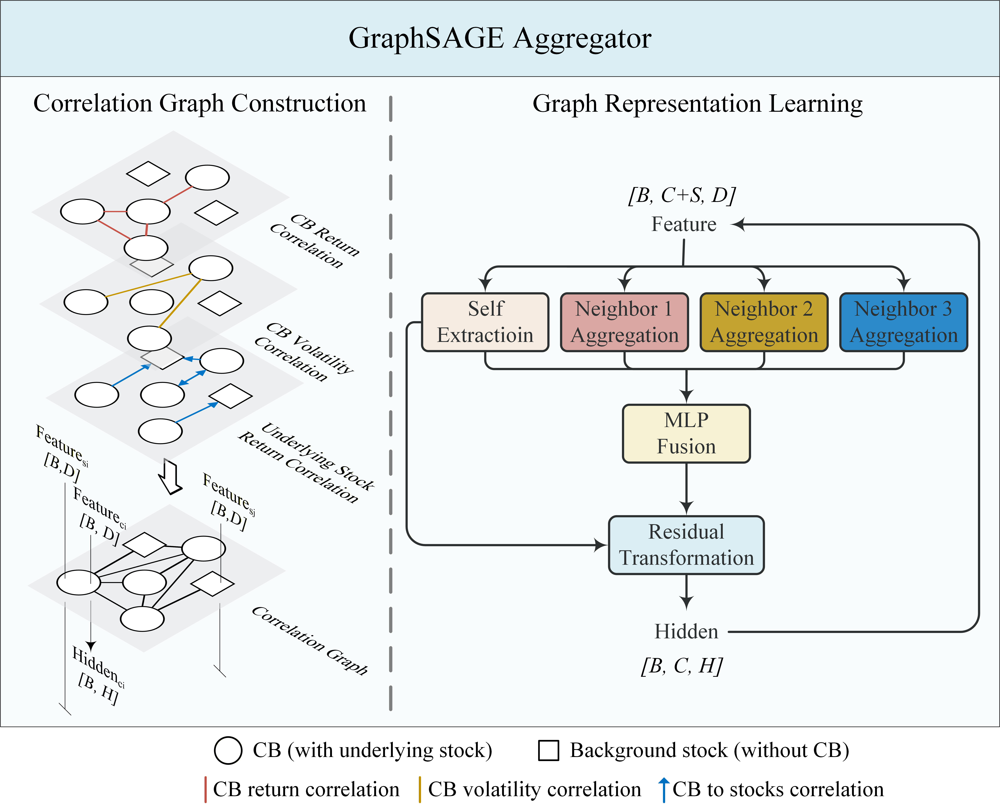

Quantitative Research Intern
Shanghai Jiayicui Private Fund Management Co., Ltd.
Built a cross-sectional convertible-bond return ranking model with multi-factor encoding, multi-relational GNN aggregation, and an MLP ranking head, evaluating correlations in bond returns, volatility, and underlying-stock returns, along with firm-size relationships and their combinations. Improved training with dropout, early stopping, and hyperparameter optimization, and ensembled predictions across relation-specific models to achieve a test-set RankIC of 0.095. Used Polars and GPU acceleration to reduce overhead in factor processing, matrix computation, and graph aggregation.
May–Jul. 2026